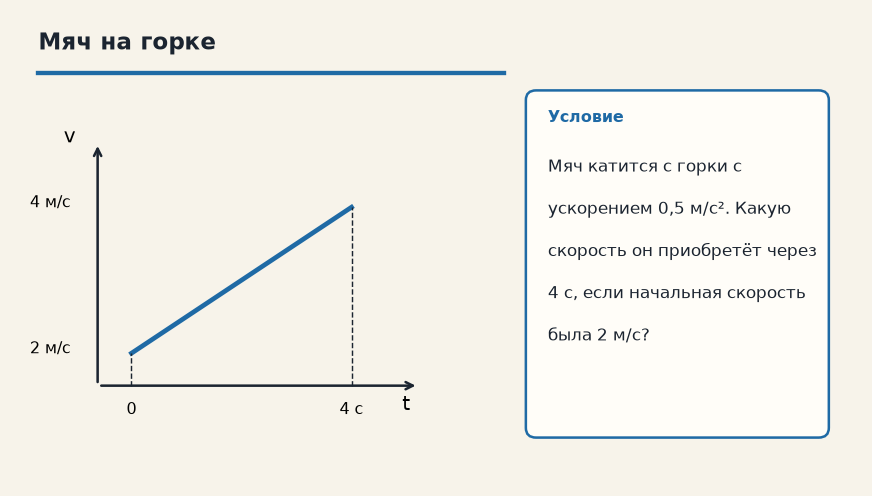

Тема «Равноускоренное движение»: физический смысл, единицы величин, типичные ошибки и два разобранных примера.

Схема к условию.
Физический смысл
Скорость меняется одинаково за каждую секунду. Появляется ускорение a. Главное правило: если ускорение направлено по скорости — разгон, против — торможение.
При равноускоренном движении скорость меняется на одну и ту же величину за каждую секунду. Эту величину и называют ускорением a. Если a направлено туда же, куда скорость, тело разгоняется. Если a против скорости — тормозит, и скорость уменьшается.
Две рабочие формулы карточки: v = v₀ + a·t говорит, какой станет скорость, а S = v₀·t + (a·t²)/2 — какой путь накопится. v₀ — это скорость в тот момент, который мы назвали нулём времени, а не «какая-то скорость вообще».
Из покоя v₀ = 0, и формулы короче: v = a·t, S = (a·t²)/2. Пример с мячом на горке как раз про первую формулу: 2 + 0,5·4 = 4 м/с. Путь в той задаче не спрашивали, и подставлять его туда не нужно.
Формула и единицы
v = v₀ + a · t
S = v₀ · t + (a · t²) / 2
v₀ — начальная скорость (м/с), a — ускорение (м/с²).
v₀ — начальная скорость (м/с), v — скорость спустя время t, a — ускорение (м/с²), S — путь (м).
Пояснение
Ты разгоняешься на светофоре на спортивной машине. Каждую секунду скорость растет на 5 км/ч.
На светофоре спортивная машина добавляет скорость равными порциями: например, по 5 км/ч за каждую секунду. Это и есть постоянное ускорение.
Типичные ошибки
Путают v₀ и v. Если тело начинает двигаться из состояния покоя — v₀ = 0.
Путают v₀ и v. v₀ — скорость в начале выбранного промежутка. Если тело трогается из покоя, v₀ = 0, а не «примерно ноль».
Схему к задаче нарисуйте сами. Решение открывается отдельно.
Разбор 1
Разгон с места
Автомобиль трогается с ускорением 1,5 м/с². Какую скорость и какой путь он наберёт за 8 с?
Сначала данные, затем перевод в СИ, если он нужен, потом ход и ответ.
Дано. v₀ = 0, a = 1,5 м/с², t = 8 с
В СИ. Перевод не нужен: все величины уже заданы в СИ.
Найти. v и S
Решение.
v = 1,5 · 8 = 12 м/с.
S = 1,5 · 64 / 2 = 48 м.
12 м/с и 48 м.
Схема для сверки. Её рисуют до того, как открывают решение.
Разбор 2
Торможение до остановки
Машина ехала 72 км/ч и тормозит с ускорением 2 м/с². За какое время она остановится и какой путь пройдёт?
Сначала данные, затем перевод в СИ, если он нужен, потом ход и ответ.
Дано. v₀ = 72 км/ч, a = −2 м/с², v = 0
В СИ.
72 / 3,6 = 20 м/с. Ускорение уже в м/с², знак минус — против скорости.
Найти. t и S
Решение.
0 = 20 − 2 t, t = 10 с.
S = 20 · 10 + (−2) · 100 / 2 = 200 − 100 = 100 м.
10 с и 100 м.
Схема для сверки. Её рисуют до того, как открывают решение.
Разбор 3
Скорость через 4 с
Тело имело скорость 3 м/с и ускорение 0,5 м/с² вдоль скорости. Какова скорость через 4 с?
Сначала данные, затем перевод в СИ, если он нужен, потом ход и ответ.
Дано. v₀ = 3 м/с, a = 0,5 м/с², t = 4 с
В СИ. Перевод не нужен: все величины уже заданы в СИ.
Найти. v
Решение.
v = 3 + 0,5 · 4 = 5 м/с.
5 м/с.
Схема для сверки. Её рисуют до того, как открывают решение.
Разбор 4
Путь при известной скорости
Сани разогнались от 2 м/с до 6 м/с за 8 с с постоянным ускорением. Какой путь они прошли?
Сначала данные, затем перевод в СИ, если он нужен, потом ход и ответ.
Дано. v₀ = 2 м/с, v = 6 м/с, t = 8 с
В СИ. Перевод не нужен: все величины уже заданы в СИ.
Найти. S
Решение.
a = (6 − 2) / 8 = 0,5 м/с².
S = 2 · 8 + 0,5 · 64 / 2 = 16 + 16 = 32 м.
32 м.
Схема для сверки. Её рисуют до того, как открывают решение.
Разбор 5
Знак ускорения
Велосипедист едет 8 м/с и нажимает тормоз: ускорение 1 м/с² против скорости. Какова скорость через 3 с?
Сначала данные, затем перевод в СИ, если он нужен, потом ход и ответ.
Дано. v₀ = 8 м/с, a = −1 м/с², t = 3 с
В СИ. Перевод не нужен: все величины уже заданы в СИ.
Найти. v
Решение.
v = 8 − 3 = 5 м/с.
5 м/с.
Схема для сверки. Её рисуют до того, как открывают решение.
Разбор 6
Минута разгона
Из покоя тележка разгоняется 0,2 м/с² в течение 1 мин. Найдите путь.
Сначала данные, затем перевод в СИ, если он нужен, потом ход и ответ.
Дано. v₀ = 0, a = 0,2 м/с², t = 1 мин
В СИ.
1 мин = 60 с.
Найти. S
Решение.
S = 0,2 · 3600 / 2 = 360 м.
360 м.
Схема для сверки. Её рисуют до того, как открывают решение.
Разбор 7
График
На графике v(t) скорость выросла от 4 м/с до 10 м/с за 3 с по прямой. Найдите ускорение и путь.
Сначала данные, затем перевод в СИ, если он нужен, потом ход и ответ.
Дано. v₀ = 4 м/с, v = 10 м/с, t = 3 с, график прямой
В СИ. Перевод не нужен: все величины уже заданы в СИ.
Найти. a и S
Решение.
a = (10 − 4) / 3 = 2 м/с².
S = (4 + 10) / 2 · 3 = 21 м.
2 м/с² и 21 м.
Схема для сверки. Её рисуют до того, как открывают решение.